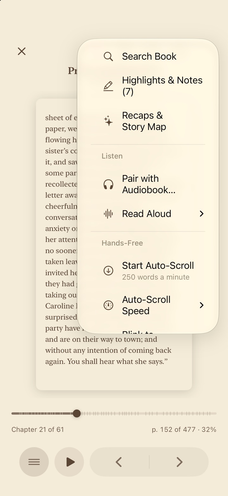
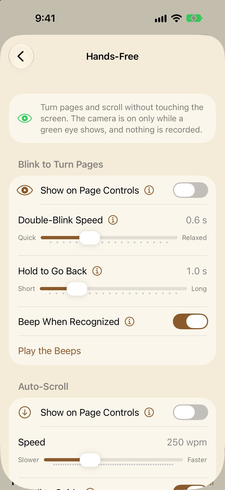

Hands-free reading
Read without touching the screen: let the book scroll itself, pause or switch to the audiobook when you look away, turn pages with a blink, or turn them from your Apple Watch. For reading in bed, at the stove, or with a cup in each hand.
Auto-Scroll
Auto-Scroll moves the book up the screen at one steady pace, so you can read without lifting a finger. It works in EPUBs and other text books (not PDFs or comics).

Starting it
In a book, open ⋯ → Hands-Free → Start Auto-Scroll. Its speed is shown under it, and Auto-Scroll Speed picks another. To keep a button for it on the page, turn on Settings → Hands-Free → Auto-Scroll → Show on Page Controls: the button goes on the page controls, or in the menu’s bottom bar if you don’t use page controls.
The button is a down arrow, never play and pause (those belong to the narration): outlined when stopped or paused, filled and gently pulsing while it scrolls. If you read with Slide or Curl page turns, the book switches to Scroll while Auto-Scroll runs, and goes back to your page style, at the same place, when you stop.
Speed
Speed is in words a minute, from 100 to 600 (250 to start with), and it’s the same in every book. Libretto works out how far to move from the lines on the page, so the pace is steady through short lines and long ones. It eases up to speed over a second and a half when it starts, after every pause, and at each new chapter, so the text never lurches.
The reading guide
With Reading Guide on (the default), a band one line high sits a third of the way down the screen, and the text scrolls up through it. Keep your eyes on the band and the book comes to you. It dims while Auto-Scroll is paused, and takes its color from Read-Along’s marker (see The marker).
While it runs
- The page controls hold pause, slower and faster, with the speed between them.
- The menu’s bottom bar has Pause or Resume, the speed, the minutes left in the chapter at this speed, and Stop.
- The page buttons still jump a screen, and it carries on from there.
- At the end of a chapter it holds for two seconds (“Keep scrolling for …”) and goes on. At the end of the book it stops.
- With a keyboard, the space bar pauses and resumes, and ↑ and ↓ change the speed by 10.
- The screen stays awake while it scrolls, and for 10 minutes after a pause.
Pausing
- Tap the middle of the page to pause, and again to carry on. (With page controls showing and Lock Page on, use their pause button.)
- Bringing up the menu pauses it, with Resume in the bar.
- Drag the text to look back, and it picks up from the new spot a moment after the text comes to rest.
- A sheet over the page pauses it until the sheet closes. Leaving the app pauses it until you tap Resume.
- It stops when you close the book, and doesn’t run while Read-Along narration plays (the narration moves the page then). Blinks don’t turn pages while it runs.
When I look away
Auto-Scroll can keep an eye on you through the front camera. Settings → Hands-Free → When I Look Away is one choice, and it applies whenever Auto-Scroll runs:
- Keep Scrolling Default
- It keeps going whether you’re looking or not. No camera.
- Pause
- It pauses when you look away or close your eyes, and goes back to where you were.
- Listen Instead
- In a book paired with its audiobook, looking away plays the narration from the line you were on, until you look back.
Pause
Looking away (turning your head, your eyes off to the side, or looking up over the phone) for a moment (under a second at Medium sensitivity), leaving the camera’s view, or closing your eyes pauses Auto-Scroll. Blinking never does, and looking down at the page doesn’t count as closed eyes. It then scrolls back to where the text was when you looked away, so nothing went by unseen. Look back, eyes open, for half a second and it carries on.
While it’s paused, the footer says why: “Paused: looked away”, “Paused: eyes closed” or “Can’t see you”. The eye beside it is green while the camera is watching.
Sensitivity, and the live check
Sensitivity (from Relaxed to Strict) sets how far counts as away. Strict pauses at a smaller turn of the head (about 20° rather than 38° at Medium) and sooner; Relaxed lets more go (about 56°). Under the slider, a live check says what the camera makes of you right now (“Right now: looking at the screen”, “Right now: looking away”). Prop your phone up the way you read, look off the way you do, and move the slider until it notices.
Beep and red edges
Beep When I Look Away plays two falling notes, and Red Edges When I Look Away makes the screen’s edges glow red until you look back; both are on to start with. Neither happens for closed eyes or for “Can’t see you”, so dozing off isn’t disturbed. The live check in Settings beeps and glows too, so you can try them there.
Listen Instead
For a book paired with its audiobook (see Read-Along and audiobooks). Look away, or put the phone down so the camera loses you, and the audiobook plays from the first word of the line that was in the reading guide. The page goes back to that line and follows the narration with Read-Along’s marker, and the footer says “Listening: look back to read”. There’s no beep or red glow.
Look back and the line the narration reached scrolls into the guide, Auto-Scroll carries on from there, and the audio fades away over five seconds (look away again meanwhile, and it comes back up). As it starts, the audio rises gently over a second.
- Start Listening After (from Right away to 30 seconds) waits that long after you look away before it plays. Until then it’s paused as usual.
- Closing your eyes still only pauses, so Sleep Detection works as before.
- In a book without an audiobook, or a part of the book that isn’t prepared yet, it pauses as usual.
- If the screen locks while it’s listening, the audio carries on; tap Resume (or the middle of the page) to take the book back. While it reads, the Auto-Scroll button shows headphones, and tapping it does the same.
Listening on Apple Watch
With a watch paired, Listen Instead has Play on Apple Watch (off to start with). The narration then plays on your watch’s speaker instead of the iPhone’s, with Libretto open on the watch. While you read with Auto-Scroll, the iPhone copies the audiobook ahead of you to the watch, a few minutes first so it’s ready in seconds, then more as you go. The status under the switch says how much your watch has.
- If the watch isn’t ready when you look away, the iPhone stays quiet and the footer says what it’s waiting for (“Copying audio to your watch: 45%”, “Open Libretto on your watch to listen”), then the watch starts from your line as soon as it can.
- On the watch: Pause and Play (Double Tap too), and the Digital Crown for volume. The footer on the iPhone says “Listening on Apple Watch: look back to read”.
- Turn Pages Instead on the watch stops reading aloud there at once, and stops Auto-Scroll on the iPhone.
- The watch app has to be open for this, so on the watch set Settings → General → Return to Clock → Libretto to After 1 Hour. Playing on the watch uses more of its battery.
Sleep Detection
Reading in bed? Turn on Settings → Hands-Free → Sleep Detection (it’s off to start with). While Auto-Scroll runs, if your eyes stay closed, or you’re out of the camera’s view, for the time set in Eyes Closed For (30 seconds to 10 minutes; 2 minutes to start with), Libretto:
- goes back to the start of the paragraph that was in the reading guide when your eyes closed;
- stops Auto-Scroll and the camera, and saves your place there;
- fades the page to black over five seconds, turns the brightness right down, and lets the screen sleep, so Auto-Lock locks the phone.
In the morning, touch the screen or come back to the app: the brightness comes back, the page says “Picked up where you closed your eyes”, and Auto-Scroll is paused at that paragraph. With Auto-Lock set to Never, the screen stays on, dark, until you touch it.
A longer time means a long blink or a glance away never stops the book; a shorter one means less to find again. Sleep Detection works with any When I Look Away choice, Keep Scrolling included.
Blink to Turn Pages
Turn pages with your eyes: two quick blinks for the next page, and close both eyes and hold to go back. It works in EPUBs, other text books and PDFs.
Turning it on
In a book, turn on ⋯ → Hands-Free → Blink to Turn Pages. The first time, iOS asks to let Libretto use the camera. A book always opens with the camera off, so you start it each time. To keep an eye button handy, turn on Settings → Hands-Free → Blink to Turn Pages → Show on Page Controls: the eye goes on the page controls (or in the menu, if you don’t use page controls). Tap it to start and stop watching for blinks.
How to blink
- Next page: blink twice, quickly, with both eyes. Each blink should be an ordinary quick one, and the second has to come within the Double-Blink Speed gap (0.6 seconds to start with). A single blink never turns the page.
- Previous page: close both eyes and keep them closed for the Hold to Go Back time (1 second to start with). The page turns, and the beep tells you to open your eyes, as soon as you’ve held long enough.
- Give it a moment between turns: right after one, it waits briefly so the end of one gesture can’t start another.
The green eye
While the camera is on, the eye button is green. Without page controls, a green eye also sits beside the chapter title in the footer (in a PDF, in the bottom corner), so you always know when it’s watching.
Beeps
With Beep When Recognized on (the default), a short beep means next page and a longer one means back. The beeps play at media volume, even with your phone on silent, and music from other apps keeps playing.
When it’s off
Blinks don’t turn pages while an audiobook plays (the pages follow the narration then), while Auto-Scroll runs or Read Aloud reads, while a sheet covers the page, or once the book is closed. The screen stays awake while it runs, until 10 minutes pass without a blink turn.
Turning pages from Apple Watch
Prop your iPhone up, open a book (or a PDF) on it, and open Libretto on your watch: it opens to a page turner. (If you’ve already gone elsewhere in the watch app, tap Turn Pages under the book that’s open on your iPhone.) It shows the chapter, the page you’re on in it, and how far through the book you are.
- Buttons: big ◀ and ▶ turn back and forward.
- Double Tap: on a watch that has it, tap your finger and thumb together twice for the next page.
- Digital Crown: turn it one click for a page, forward or back.
Page turns from the watch aren’t touches, so the iPhone would normally lock; instead its screen stays on for 10 minutes after each turn from the watch, then locks as usual. While Auto-Scroll runs, the arrows skip a screen and Stop Auto-Scroll sits under them. While the narration plays with Turn Pages While Listening off, the buttons are dimmed (“The pages follow the narration while it plays”). If a turn doesn’t reach the iPhone, the watch buzzes and says “Can’t reach your iPhone”.
The watch app needs watchOS 11 or later. Reading and listening on the watch itself is in iPad, Duo, Watch and TV.
The camera and your privacy
Blink to Turn Pages, Pause and Listen Instead, and Sleep Detection use the front camera through Apple’s face tracking. Here’s exactly what that means:
- It’s on only while a green eye shows: while Blink is watching; while Auto-Scroll runs, or waits for you to look back, with Pause, Listen Instead or Sleep Detection on; and on the Hands-Free settings page while its live check is showing.
- Each frame is looked at on your device as it arrives, for two things: whether your eyes are open or closed, and which way you’re facing.
- Nothing is recorded, kept or sent. No pictures, no video, no face data. It isn’t used for anything but turning, scrolling and pausing the page and starting or stopping the narration.
If you turned down camera access, Settings → Hands-Free says “Libretto doesn’t have access to the camera.”, with Open Settings to change it. On a device that can’t track faces, it says so, and the camera features won’t work there.
Settings → Hands-Free

Blink to Turn Pages
- Show on Page Controls Off
- Puts the eye button with the page controls. Blink to Turn Pages starts from ⋯ in a book whatever this says.
- Double-Blink Speed 0.6 s
- The longest gap between the two blinks, from 0.3 s (Quick) to 1.2 s (Relaxed).
- Hold to Go Back 1 s
- How long to keep both eyes closed to go back a page, from 0.6 to 2.5 s.
- Beep When Recognized On
- A short beep for next, a longer one for back. Play the Beeps plays them.
Auto-Scroll
- Show on Page Controls Off
- Puts the Auto-Scroll button with the page controls (or in the menu’s bottom bar). Auto-Scroll starts from ⋯ in a book whatever this says.
- Speed 250 wpm
- 100 to 600 words a minute, the same in every book.
- Reading Guide On
- The band a third of the way down the screen for the text to scroll through.
When I Look Away
- Keep Scrolling, Pause or Listen Instead Keep Scrolling
- What Auto-Scroll does when you look away. See When I look away.
- Sensitivity Medium
- How small a turn of the head or glance aside counts as looking away, with a live check under it. For Pause and Listen Instead.
- Beep When I Look Away On
- Two falling notes when it stops because you looked away. Not for closed eyes.
- Red Edges When I Look Away On
- The screen’s edges glow red until you look back. Not for closed eyes.
- Start Listening After Right away
- For Listen Instead: how long after you look away before the audiobook plays, up to 30 seconds.
- Play on Apple Watch Off
- For Listen Instead, with a watch paired: the narration plays on the watch’s speaker. See Listening on Apple Watch.
Sleep Detection
- Sleep Detection Off
- While Auto-Scroll runs, eyes closed or out of view for a while goes back to the paragraph and lets the screen go dark.
- Eyes Closed For 2 min
- How long before Sleep Detection steps in, from 30 seconds to 10 minutes.
For every setting in one place, see Every setting.
Questions
Is the camera recording me?
No. Each frame is checked on your device, as it arrives, for whether your eyes are open and which way you’re facing, and then it’s gone. Nothing is recorded, kept or sent anywhere. The camera is on only while a green eye shows.
Why doesn’t Auto-Scroll pause when I look away?
When I Look Away is set to Keep Scrolling to start with, which doesn’t use the camera. Choose Pause or Listen Instead in Settings → Hands-Free. If it still misses you looking off to the side, move Sensitivity toward Strict and use the live check under it.
It keeps pausing when I’m still reading.
Move Sensitivity toward Relaxed. Holding the phone so the camera can see your whole face helps too; if it can’t see you, it pauses with “Can’t see you”.
Why is the Auto-Scroll button dimmed?
Read-Along narration is playing, and the narration moves the page then. Pause it to scroll. Auto-Scroll also isn’t available in PDFs or comics.
Does Listen Instead work without an audiobook?
It needs the book paired with its audiobook, and that part of the book prepared. Otherwise, looking away just pauses. See Pairing a book with its audiobook.
Blinks aren’t turning the page.
Check that the eye is green; a book always opens with the camera off. Blinks are also off while an audiobook plays, while Auto-Scroll runs and while a sheet is open. Then try blinking a little more deliberately, or move Double-Blink Speed toward Relaxed.
My iPhone locks while I’m turning pages from my watch.
It stays awake for 10 minutes after each turn from the watch. If you go longer between turns, it locks as usual. Unlock it and carry on; your place is kept.
Does Sleep Detection stop my audiobook too?
Sleep Detection is part of Auto-Scroll: it stops the scrolling and lets the screen sleep. For an audiobook, use the player’s sleep timer (see The audiobook player).